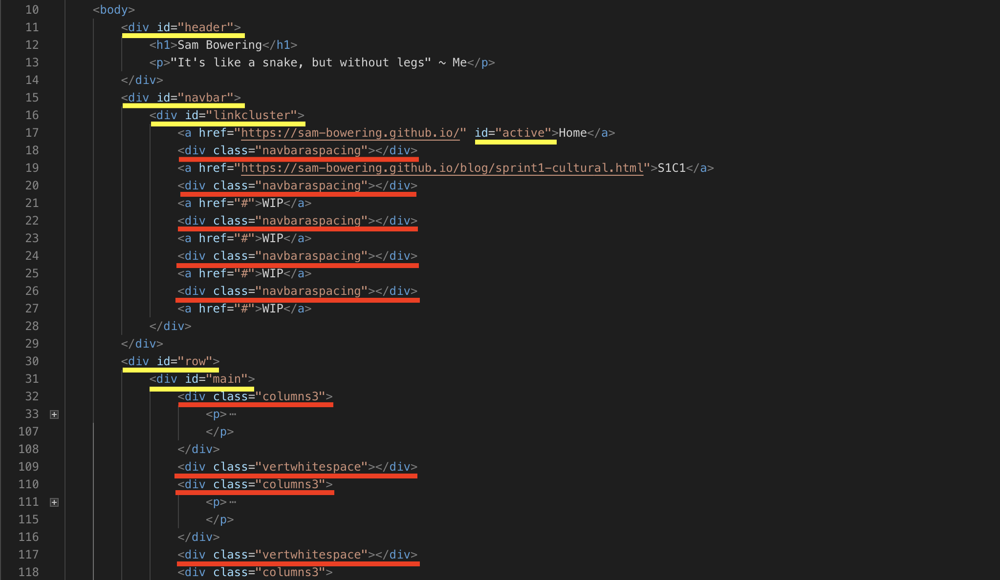
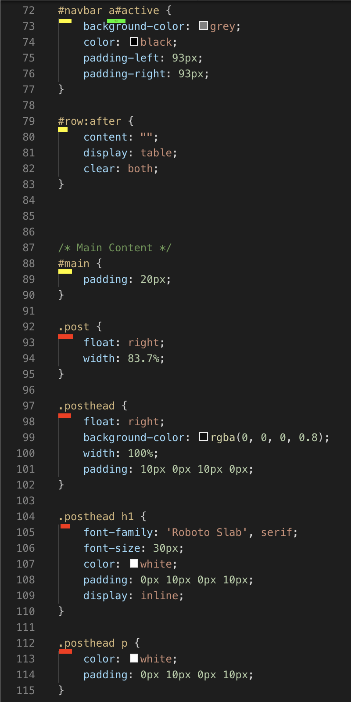

Technical Blog - Classes Vs. Id's
4/07/2019
What Are They and What Do They Do?
Classes and ID's are selectors. Selectors simply allow you to style and format an HTML element in css.
(Translation: Classes and ID's are a tool to make an aspect of a website look how you want it to)
Okay Sooo, What's the Difference?
The defining difference boils down to how much use the element will get. To use the index page of this blog as an example:

Each element marked yellow is only used once; both in the HTML file and the web page. These elements only need to appear once because they are core structural aspects of the page that have no need to have multiples of such as, the header, navigation bar, cluster of links and the main body of the page below the header. These are the ID's.
(Translation: Everything with a yellow line through it is an ID. These things only appear ONCE and are UNIQUE)
The other elements marked red are used multiple times throughout the web page and HTML file. The class selector elements are specifically elements you want to display more than once and with the exact same formatting.
(Translation: Everything with a red line through it is a class. These things appear MULTIPLE times and are all the SAME)
What do they look like Behind the Scenes?
You've seen how they're written in HTML, but not yet in css.
The difference between defining an ID versus a class is extremely simple and won't need translation. You'll understand soon, as any content starting with a hash '#' is an ID and yes, you genius, you guessed it; anything starting with a fullstop '.' is a class. If you had to go digging through the dictionary to figure that one out, all I can say is I'm worried.
But... Wait? Does CSS even care?
NOPE! HA! According to Chris Coyier, at CSS-Tricks "Regarding CSS, there is nothing you can do with an ID that you can't do with a Class and vise versa. I remember when I was first learning CSS and I was having a problem, sometimes I would try and troubleshoot by switch ing around these values. Nope. CSS doesn't care."
Translation: Javascript, another programming language. Oh, you know the one? Yeah doesn't care...
Carrying on...
Don't mind the progressively increasing angst... Elements do care! :D There is nothing stopping you from having both an ID and a Class on a single element. Orrr, even nesting an ID inside an ID or a Class inside a Class.
Translation: I can't sit down and write without getting way too chatty in my writing. Oh, and it is a-okay to place either an ID or red inside of itself to tinker with formatting within a custom formatted element.
Summary
To conclude; Classes ID's are selectors that serve as formatting links between HTML and other languages to shape elements to personal liking; '#' is used for Classes and '.' is used for ID's; the defining difference is whether the custom element is used one or more times and nesting is fully supported to allow you to further customize formatting within an element.
Translation: Classes and ID's are tools used to customize parts of a webpage to personal preference and can be used in combination to customize to ones desire.